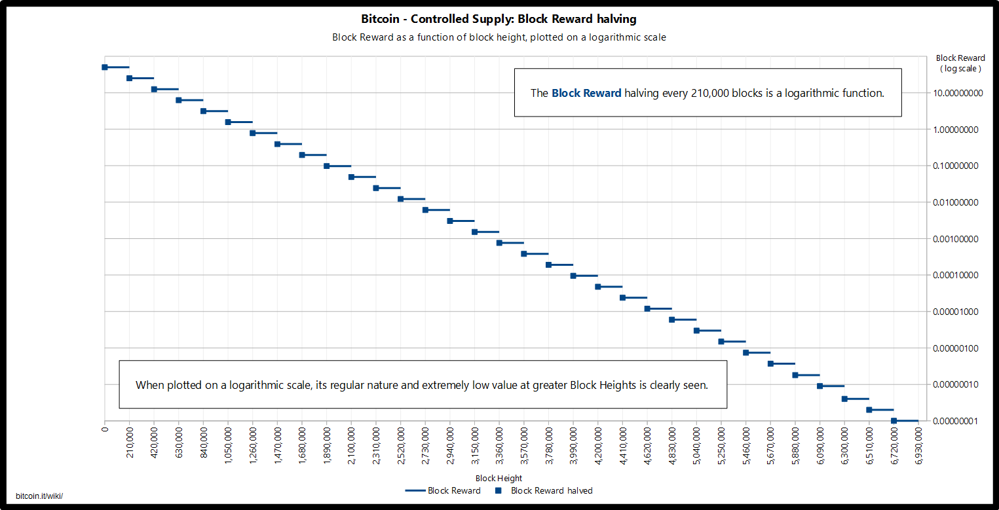
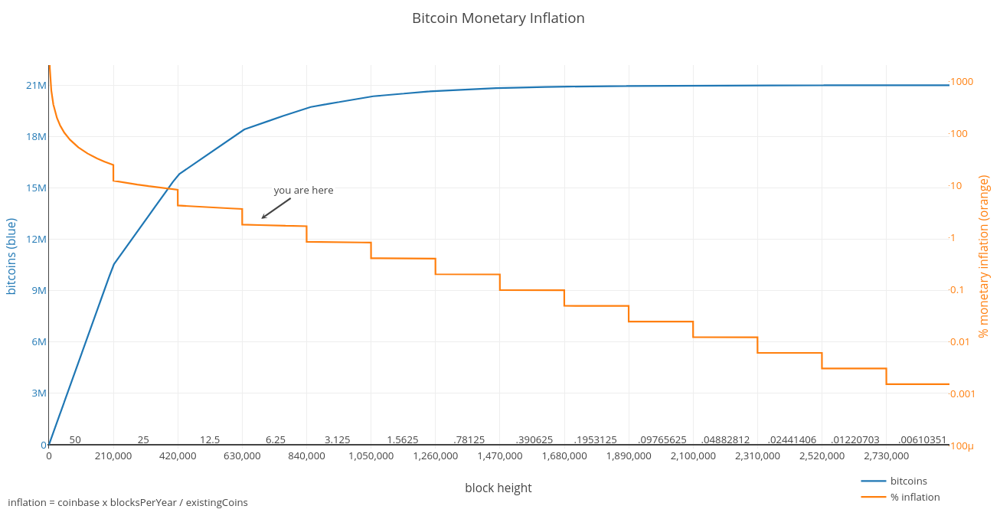

Монетарная политика биткоина
Андрей Иваницкий
9 июля 2020
Creative Commons Zero 1.0 Universal(Нажмите ? для получения помощи, n и p для следующего и предыдущего слайда соответственно)
1 Монетарная политика
Меры, принимаемые правительствами для оказания влияния на экономическую активность, а именно, управление предложением денег и кредита, также за счет изменения процентных ставок
Сколько печатать денег
2 Монетарная политика биткоина
2.1 Награда
- Субсидия за блок (6.25 биткоинов на июнь 2020)
- Комиссии за транзакции
2.2 Субсидия
- 50 биткоинов за блок
- каждые 210'000 блоков (~4 года) субсидия уменьшается вдвое
- пока не достигнет нуля
2.3 Уполовинивание
Halving (halvening) — момент в истории майнинга биткоина, когда субсидия за блок уменьшается вдвое
- эпоха — 3 января 2009 субсидия составляла 50
- эпоха — 28 ноября 2012 субсидия уменьшилась с 50 до 25
- эпоха — 9 июля 2016 субсидия уменьшилась с 25 до 12.5
- эпоха — 11 мая 2020 субсидия уменьшилась с 12.5 до 6.25
- эпоха — апрель 2024 субсидия уменьшится с 6.25 до 3.125
- …
2.4 Проекция субсидии

2.5 Предложение (запас)

2.6 Монетарная инфляция

3 Запас/приток
Запас/приток (Stock-to-flow) — отношение количества товара, находящегося в наличии, к количеству добываемого (производимого) за год
Сколько лет необходимо для удвоения количества товара находящегося в наличии при постоянном притоке
3.1 Сохранение ценности во времени
Актив с большим значением запас/приток лучше сохраняет ценность во времени
3.2 Запас/приток для биткоина
- текущее значение 27.4
- значение в эпохе 2020–2024 56
3.3 Примеры
| Актив | Значение |
|---|---|
| Биткоин | 27.4 |
| Биткоин 2020–24 | 56 |
| USD | |
| RUB | |
| Серебро | 33.3 |
| Золото | 58.3 |
| Недвижимость | |
| Энергия | |
| Время |